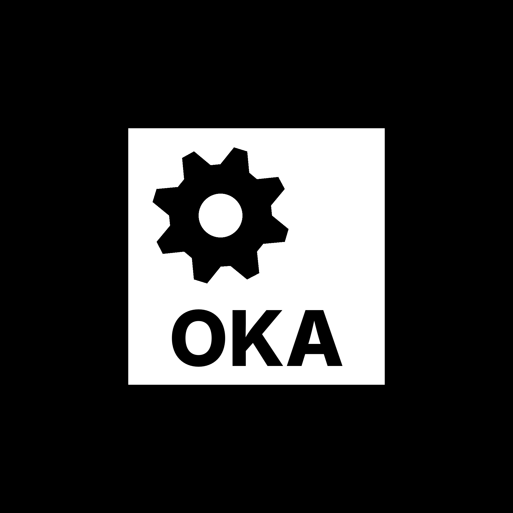

図面からAR（試作）
第三角法で描いた図面（正面図・平面図・右側面図）を撮影すると、立体を復元してAR表示します。いまは角柱の組み合わせのような形を対象にしています。
1. 用紙を出す
用紙の大きさと1マスの大きさを選んで印刷します。四隅の■で傾きを、左上の小さな四角で用紙の種類とマスの大きさを、アプリが自動で読み取ります。
印刷は「実際のサイズ（100%）」「余白なし」で、用紙は横向きにしてください。
2. 図面を読みこむ
画像をコピーして、このページで Ctrl+V を押しても読みこめます。
「1. 用紙を出す」の用紙に描くと、傾きを補正し、方眼に合わせて寸法を正確に読み取ります。普通の紙の場合は、平面図を正面図の上、右側面図を正面図の右に描いてください。寸法線や文字は入れないほうが認識しやすいです。
読み取り結果
正面図平面図右側面図
図面を直す・画面でかく
読みこんだ図面の線がここに出ます。方眼の点から点へドラッグすると線を引けます。斜めの線はどの角度でも引けます。円は中心から半径の点までドラッグ、円弧は中心から始めの点までドラッグしてから終わりの点をタップします。青い点線は投影の補助線で、平面図と正面図の幅、正面図と右側面図の高さをそろえるのに使えます。
3. 立体にする
印刷用マーカー
このマーカーを印刷して机に置き、「マーカーの上に表示」を押してカメラを向けると、マーカーの上に立体が乗ります。Chromebookの内蔵カメラでも使えます。

白い余白を残して、一辺8〜10cmくらいで印刷するのがおすすめです。光沢紙より普通紙のほうが反射せず認識しやすいです。